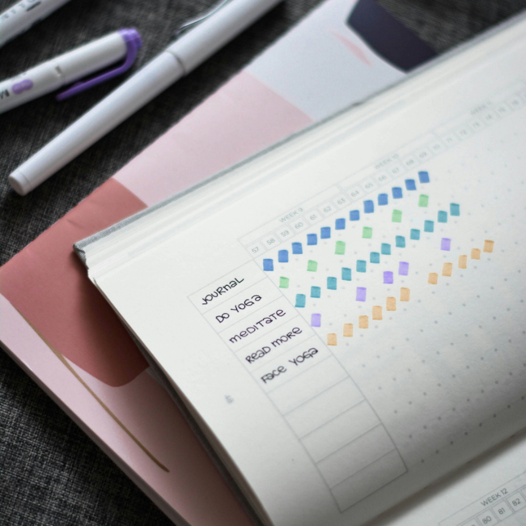
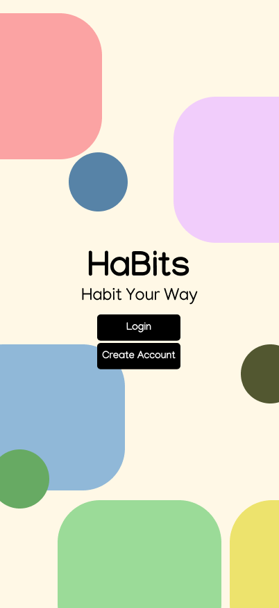
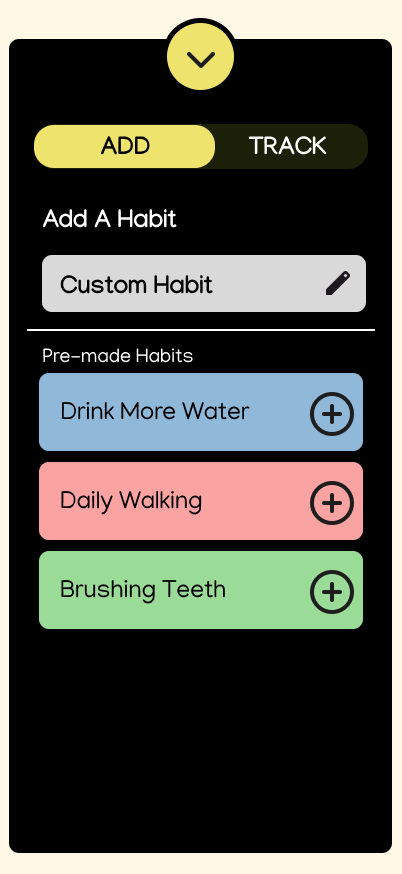

HaBits Project
| Role | Timeline | Focus |
|---|---|---|
| Designer, Researcher | Mar - May 2026 | Prototyping, Usability Research |

TL;DR
The problem
Habit tracking apps are difficult to use: require too much input from the user, aren't customizable, users have to remember to cross habits off.
What I did
Ideated new features for a habit tracker, prototyped and tested those features with potential users, used test results to improve usability.
The outcome
A high fidelity prototype of a novel habit tracking app that is more customizable and pairs with other accounts to check off habits based on metrics.
Overview
This was a quarter-long project completed in a group of four for a Prototyping class. Our idea was to create a habit tracking app that differed from our own experiences with habit trackers, by allowing users to:
- Create custom habits and categories for those habits to fit into.
- Move widgets (known as bits) around on the screen to optimize their own experience.
- Sync their HaBits account with other accounts, allowing them to automatically check off goals using metrics from other services such as fitness tracking apps or music services.
Methods
Our methods for this project included:
- Lo-fi design charette
- Creating a moodboard
- Mid-fidelity prototyping
- User testing specific tasks
- Creating a high fidelity prototype based on results
My Role
As part of a 4 person team, I was specifically responsible for:
- Participating in team design activities
- Prototype logistics
- Writing the test plan
- Conducting user tests
- Extracting design requirements from user testing results
- Contributing to the final report
Project Deliverables
After ideating potential new features for a habit tracker during a low fidelity design charette, we modeled those features in a mid fidelity prototype, which we then tested with potential users. We then created a high fidelity prototype of the HaBits app, heavily modeled on the feedback that we got from our test sessions.
Final Design Examples


Final Report
For more insight into this project, you can take a look at the final report, including a link to the finalized Figma file, here.
Lessons Learned
During the course of this project, I got a good look at the entire prototyping process and how one works their way from a simple idea to a high fidelity prototype using design practices and user testing. I was also able to practice writing test plans and executing those plans to improve initial designs. If I had more time with this project, I would conduct more user experience testing using the high fidelity prototype and work out how the features needed to be adjusted to be the most successful. .